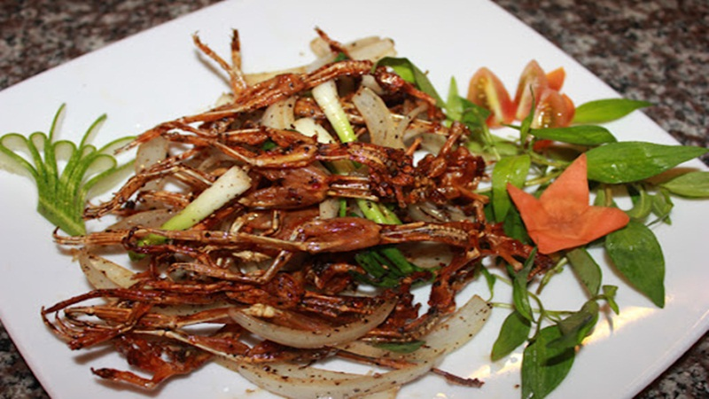

Thông tin về món ăn
Nguồn gốc
Từ Campuchia sau đó du nhập vào Việt Nam và trở thành đặc sản của đồng bằng sông Cửu Long, đặc biệt là An Giang. Người dân miền Tây đã phát triển nghề làm khô nhái từ nhái cơm tự nhiên, một loài sinh sống ở các vùng đồng ruộng, để tạo ra món ăn độc đáo.
Nguyên liệu chính
- Nhái: Sử dụng nhái cơm tự nhiên, có kích thước nhỏ nhưng thịt chắc và béo.
- Gia vị: muối, tiêu, ớt, sa tế, đường, bột ngọt.
Đặc điểm
- Hương vị: Dai, mặn vừa, thơm mùi đồng quê.
- Cách thưởng thức: Chiên hoặc nướng trên than hồng, ăn kèm cơm hoặc làm món nhậu.
- Trải nghiệm: Vị dai, mặn, thơm, kích thích vị giác, đậm chất miền Tây.